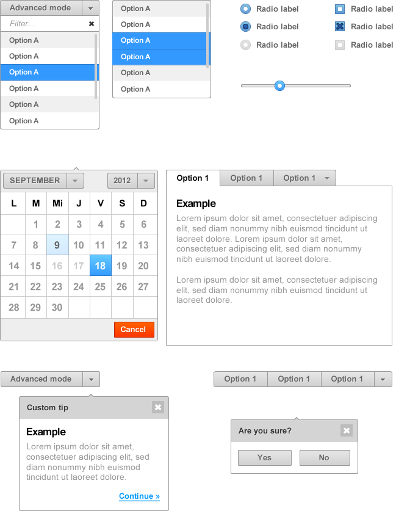

tuik
themable user interface kit
tuik is created with the intention of being a component-based framework to build applications focused on detailed and rich interfaces.
tuik is build on the top of jQuery and each tuik component acts as a jQuery plugin.
Characteristics
- Full Client Stack
- tuik uses the main web standards technologies, HTML5, CSS, and Javascript. Isn`t only a CSS or JS framework, it`s based on components and usually they use a mix of all these technologies.
- Component-based.
- Each component can be used separately. No need to add entire library if you only want to use a pair of components. Use only CSS/JS/HTML you need.
- Themable.
- Oriented to be themable. To build themes according to the project. All theme-related styles are stored in sass variables for easy customization and most measures are given in em`s.
- Modern browser support.
- tuik focuses on modern browsers. In other words IE6 and IE7 are not supported.
- Mobile friendly.
- not being a mobile specific framework, tuik uses mobile optimized techniques for smooth animations, touch support...
- Focuses on semantic.
Dependencies
- jQuery
- http://www.jquery.com
- jQuery.animate-enhanced
- http://playground.benbarnett.net/jquery-animate-enhanced/
In the oven!
Some designed components.
